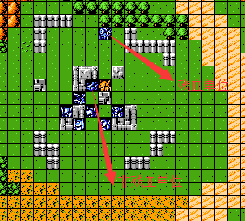
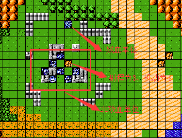
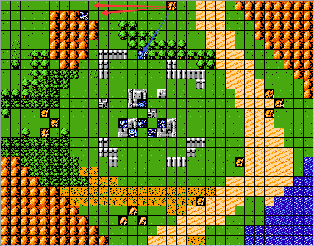
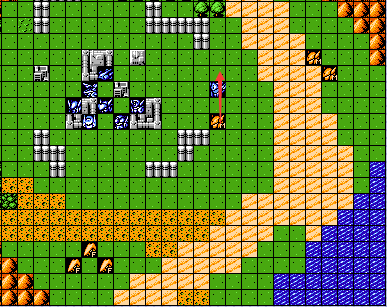
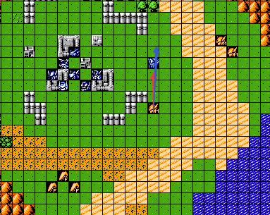
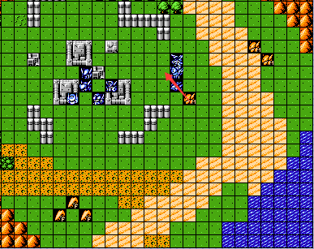

AI智商即敌方单位（或者我方npc）的行动方式（如何移动或者攻击），以下说明我将己方NPC省去，行动方式原则与敌方单位一致。
AI智商宏观意义上的代码组成为逻辑事件和基础判定方式（详见基础判定说明）。逻辑事件同理事件（关于事件的详细定义和解释请参考修改资料-数据-事件整理），简单的来说就是根据设定的事件去执行行动（例如指定攻击某人、某回合开始行动、达成指定条件撤退等等），这是AI在行动执行过程中的最高优先级。例如第一关增援的夏亚，在两个小弟均被击落之后，便会优先选择撤退到左上角，而不会去选择攻击我方单位，这个就是执行的最高优先级，如果此分支无法执行。即被我方单位包围，才会去选择攻击我方单位。再具体的拿某回合开始行动为例，只有当满足回合条件时，AI才开始行动，否则一直为待机状态，一般AI智商中也仅仅存在此行动回合限制的逻辑事件。
基础判定方式为AI行动的核心，一共有三个优先级（第一优先级为优先移动、优先攻击；第二优先级为输出伤害最高或者承受伤害最低；第三优先级为命中，受第二优先级的影响；第一、第二优先级在基础判定方式中一定存在，第三优先级在某些基础判定方式中不存在；第一优先级的执行结果取决于最终判定结果，也就是会根据最终判定结果来决定是否执行移动，或者优先执行移动，亦或者是仅仅执行移动），即如何根据当前战场局势去执行移动和攻击命令。敌方单位优先执行移动或者攻击（这个就是我们通常所说的移动攻击或者只会攻击贴身单位），这在基础判定方式中被决定了。关于优先执行移动和攻击，我再举几个例子加以说明。何谓优先攻击，假设敌方是个近战单位，在行动的时候，有一个我方单位与其贴身，在这个敌方单位可移动范围内有另外一个我方单位（极端假设是一个可一击击落的单位），那么这个敌方单位在行动的时候会优先考虑攻击贴身的单位，而不是可以一击击落的单位；再假设敌方是个拥有远程武器的单位（并且机动值大于射程），在远程武器攻击范围内有可攻击的我方单位，在移动范围内有可一击击落的我方单位（此单位不在射程范围内），那么该敌方单位会优先攻击射程范围内的我方单位，而不是可一击击落的那个我方单位。在此我以两个图示加以说明。注意：优先移动和优先移动指的是优先判定的优先级，而不是优先执行的优先级，例如优先移动，如果满足第二优先级判定的结果，此单位也会在原地攻击我方单位，AI的行动结果是取决于最终判定结果的。
 
图1敌方为近战单位，行动时会攻击贴身单位；图2敌方为远程单位，行动时会攻击红框内单位；
对于优先移动单位而言，在行动的时候会综合考虑战场因素，并结合游戏系统中所设定的需要判定的相关参数（在下面我会一一说明是哪些相关参数）去索引在可攻击和可移动范围内满足基础判定方式的目标攻击单位。简单的来说，只要在可移动或者可攻击范围内有可一击击落的我方单位，就会去优先攻击（这个是基础判定方式的最高优先级【攻击可一击击落单位】，在下面我会详细说明）。对于以上两图而言，如果敌方的智商的基础判定方式中选择优先移动作为优先级，那么这个敌方单位将会攻击我方可一击击落的单位（弓天使）。
对于无攻击目标，仅仅执行移动的单位而言，有以下行动原则：如果敌方单位在移动和攻击范围内无可攻击单位，那么会朝着距离我方最近的移动（距离最近指的是计算地形机动补正之后的实际路径），同条件下向着我方编号小的单位移动。如果朝着距离最近的单位有多条最短路径，那么在移动的时候会随机选择一条路径进行移动。如下图所示：

如上图所示亡灵MKⅡ移动攻击范围内无可攻击目标，此时会朝着距离最近的我方单位移动，由于是陆型单位，会受到地形机动补正的影，贴身于左边胜利者的路径为8，贴身于下方的弓天使的路径为9，那么此敌方单位会选择朝向红色箭头所示的胜利者移动，但是由于存在两条最短路径，此敌方单位在行动的时候就会随机选择一条路径进行移动。
敌方单位在进行移动之后攻击我方单位的位置顺序选择原则：众所周知，一个单位可周边有四个位置，即上下左右，敌方在对于这个位置的选择便遵循这个“上下左右的”顺序，如下图所示：



如上两图所示，敌方单位会在移动之后攻击我方单位弓天使，无论在哪个位置初始位置，都回去选择“上”位攻击弓天使；对于右下图而言，由于机动值不够，无法到达蓝色箭头所示的“上”位，便会选择红色箭头所示的“下”位去攻击，对于右下图，由于“上”位和“下”位均被我方单位占据，此时便会选择“左”位进行攻击，当上下左三个位置的可攻击条件均不满足时，才会选择“右”位进行攻击。
对于具有修理装置的敌方单位而言，有如下行动原则：当自身的当前HP大于最大HP的二分之一时，如果周围存在己方损血单位，便会优先进行修理，这个取决于基础判定方式中的第一优先级，如果是优先攻击，那么会优先修理自身，如果是优先移动，那么会优先修理范围内的敌方损血单位（修理顺序为敌方阵营的出场编号从小到大的顺序），再修理自身；当自身的HP小于最大HP的二分之一时，如果周围存在可攻击的我方单位，便会优先进行攻击，如果无，还是按照以上原则进行修理，即如果是优先攻击，便会修理自身，优先移动，即会先修理移动范围内可修理的单位。
在详细说明敌方基础判定方式之前，我先列举下AI智商的基础判定方式中的伤害和命中计算公式中（公式可参考修改资料-程序-中心破解-伤害和命中计算）所涉及的相关参数（包含一系列的显参和隐参）。这些参数包括防御、机动力、武器火力、武器地形适应性、机体类型、精神附加状态（强攻、热血、防守、瞄准、必杀、回避、干扰等涉及伤害与命中的精神）、地形命中补正、地形防御补正（钢铁之魂与时空之影）、距离命中补正。需要注意的是机体特技和武器特技不在判定范围之内。这些参数影响AI智商基础判定方式所需要判定的两个参数：伤害与命中（由以上参数结合计算公式得出的结果）。以下我将列出相关公式加以说明所涉及的相关参数：
1.伤害计算公式：承受伤害=[（强度+武器火力）-防御 ]*地形免伤（地形防御补正）*精神免伤（防守）
输出伤害==[（强度+武器火力）-防御 ]*地形免伤（地形防御补正）*精神加成（强攻、热血等）
2.命中计算公式：命中=[ 速度差+武器基础命中+精神加成（瞄准）]*地形命中补正-地形距离补正
注意：强度+武器火力即为机体状态栏中显示的武器火力
敌方单位走位随机性的相关描述和在哪个位置攻击我方单位的描述